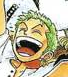
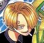

- East Blue (1-61)
- Romance Dawn (1-3)
- Aparição de Luffy, do Chapeu de Palha
- Capitão dos Chapeu de Palha;
- Usuário da Fruta do Diabo: Borracha;
- Seu sonho é ser Rei dos Piratas.
- Aparição de Zoro o Caçador de Piratas

- Espadachim do Bando;
- No fim decide se juntar ao Bando;
- Seu sonho é ser o Maior Espadachim do Mundo.
- Orange Town (4-8)
- Aparição de Nami, a Gata Ladra
- Navegadora do Bando;
- Concorda em se unir temporariamente com Zoro e Luffy;
- Seu sonho é fazer um Mapa do Mundo Inteiro.
- Vila Syrup (9-18)
- Aparição de Usopp, o Mentiroso
- Atirador do Bando
- Decidiu ir para o mar, seguindo seu sonho de se tornar um "guerreiro valente do mar"
- Going Merry, o Primeiro Navio dos Chapeu de Palha
- Baratie (19-30)
- Aparição de Sanji Perna Preta

- Cozinheiro do Bando
- Seu sonho é encontrar o paraíso dos chefes, o All Blue
- Arlong Park (31-44)
- Após a Ardua Batalha, Nami oficialmente se junta ao Bando.
- Bando do Buggy: Após a Batalha!(46-47)
- Loguetown (45, 48-53)
- Aparição de Tony Tony Chopper
- Médico do Bando
- Usuário da Fruta do Diabo: Humano
- Seu sonho é se tornar um médico que cura todos os males e que pode tratar qualquer doença
Dragão Milenar(54-61) Filler
- Alabasta (62-135)
- Reverse Mountain (62-63)
- Whiskey Peak (64-67)
- Primeira Aparição de Nico Robin
- Antagonista secundária desta Saga
- Coby e Helmeppo (68-69)
- Little Garden (70-77)
- Ilha Drum (78-91)
- Alabasta (92-130)
- Nico Robin, a Filha do Diabo
- Arqueologista do Bando
- Usuária da Fruta do Diabo: Flor
- Seu sonho é encontrar o Rio Poneglyph, que conta a verdadeira história.
- Persuadiu a tripulação para deixá-la entrar ao Bando (Ultimo EP do arco)
Pós-Alabasta(131-135) Filler
- Skypiea (136-206)
Ilha dos Carneiros(136-138) FillerNévoa Arco-Íris(139-143) Filler- Jaya (144-152)
- Skypiea (153-195)
G-8(196-206) Filler
- Water 7 (207-325)
- Davy Back Fight (207-219)
Sonho do Oceano(220-224) FillerRetorno de Foxy(225-226) Semi-Filler- Water 7 (227-265)
- Enies Lobby (266-312)
- Pós-Enies Lobby (313-325)
- Thriller Bark (326-384)
Adorável Terra (326-336) Filler- Thriller Bark (337-381)
Ilha Spa (382-384) Filler
- Guerra de Marineford (385-516)
- Arquipélago Sabaody (385-407)
- Amazon Lily (408-421)
- Impel Down (422-425)
Pequeno-oriente Azul (426-429) Filler- Impel Down (430-456)
- Marineford (457-489)
- Pós-Marineford (490-516)
- Ilha dos Homens-Peixe (517-574)
- Retorno a Sabaody (517-522)
- Ilha dos Tritões (523-574)
- Aliança Pirata (575-750)
Ambição de Z (575-578) Filler- Punk Hazard (579-625)
Recuperando César (626-628) Filler- Dressrosa (629-746)
- Silver Mine (747-750)
- Yonkou (751~)
- Zou (751-779)
Marinha Supernova (780-782) Filler- Whole Cake (783-877)
- Reverie (878-889)
- País de Wano (890-894)
- Rei do Ácido Carbônicoli (895-896)
- País de Wano (continuação) (897-1028)
- O Passado de Uta (1029-1030)
- País de Wano (continuação) (1032~)
Gêneros Musicais
- FLOW
- Artistas
- Kohshi
- Vocalista, Guitarrista rítmico
- Keigo
- Take
- Guitarrista principal, Vocalista de apoio
- Got's
- Baixista, Vocalista de apoio
- Iwasaki
- Rock
- Bandas Internacionais
- FLOW
- LiSA
- Eve
- Linked Horizon
- Bandas Nacionais
- Engenheiros do Havai
- Skank
- Paralamas do Sucesso
- Pagode
- Raça Negra
- Turma do Pagode
- Alexandre Pires
- Zeca Pagodinho
- Grupo Revelação
- Musicas Populares Brasileiras
- Garota de Ipanema
- Onde Anda Você
- Chove Chuva
- Navegadores
- Redes Sociais